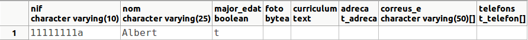
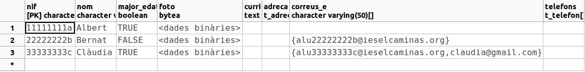
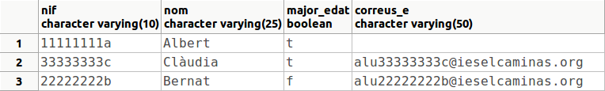
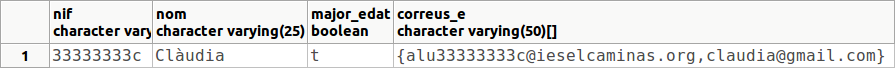
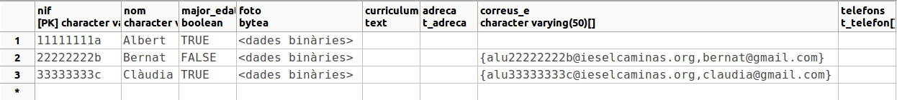
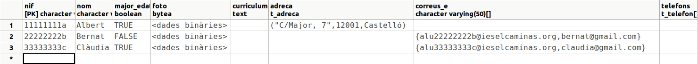
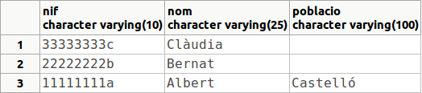
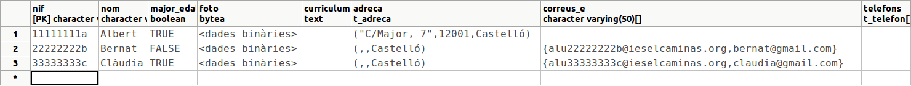
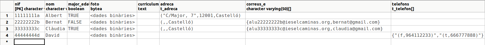

2.3.1 - Sentències SQL per a tipus de dades nous
Anem a comentar breument com especificarem les dades per als tipus de dades nous, posant diferents exemples en cada cas. De moment ens deixem els tipus BLOB i CLOB (BYTEA i TEXT), perquè des de PgAdmin no podrem donar contingut. Ens els deixem per a accés des de JDBC.
Boolean
El millor és utilitzar els valors TRUE i FALSE, en majúscules o minúscules, i sense cometes.
INSERT INTO PERSONA4(nif,nom,major_edat)
VALUES ('11111111a','Albert',TRUE);
PostgreSQL pot fer conversions de text a boolean, i en aquest cas pot ser un text que siga igual a TRUE o FALSE o que comence per alguns d'aquestos caràcters. També valdria posar 1 o 0 entre cometes.
INSERT INTO PERSONA4(nif,nom,major_edat)
VALUES ('22222222b','Bernat',false);
Observeu com ara per a seleccionar els que són majors d'edat comparem amb 'T'. Per tant fa una conversió de text a boolean. I val la inicial. Igual valdria en minúscula.
SELECT * FROM PERSONA4
WHERE major_edat='T';
Aquest seria el resultat:

Array
Per a poder especificar el conjunt de valors, utilitzarem el constructor ARRAY, i posarem els diferents valors entre claudàtors ( [ ] ) i separats per comes.
INSERT INTO PERSONA4(nif,nom,major_edat,correus_e)
VALUES ('33333333c','Clàudia',TRUE,ARRAY['alu33333333c@ieselcaminas.org','claudia@gmail.com']);
En algunes ocasions és suficient amb posar-lo entre claus ( { } ), sense haver d'utilitzar el constructor ARRAY. És com si indruduírem els valor directament en la taula, des del PgAdmin, sense utilitzar sentència INSERT, encara que en realitat PgAdmin el que fa és construir ell la sentència SQL.
En les sentències SQL hem de posar-lo tot entre cometes simples. Com en el cas dels correus electrònics els elements són de text, haurem de jugar amb les cometes simples i dobles.
UPDATE PERSONA4
SET correus_e = '{"alu22222222b@ieselcaminas.org"}'
WHERE nom = 'Bernat';
En aquest moment el contingut de la taula hauria de ser:

Per a fer referència a un determinat element de l'array (el primer, el segon, ...) posarem entre claudàtors l'índex, després del nom del camp. Aquest índex comença per 1.
SELECT nif,nom,major_edat,correus_e[1]
FROM PERSONA4;

Per a poder buscar un element dins d'un array, no cal comparar amb cadascun dels elements, sinó que podem utilitzar ANY:
SELECT nif,nom,major_edat,correus_e
FROM PERSONA4
WHERE 'claudia@gmail.com' = ANY (correus_e);

Si volem afegir un element a un determinat array, des de SQL podem utilitzar funcions de manipulació d'arrays, com per exemple array_append(array,element), que afegeix un element al final. En el següent exemple modifiquem els correus d'una persona, afegint-li un al final.
UPDATE PERSONA4
SET correus_e = array_append(correus_e,'bernat@gmail.com')
WHERE nom = 'Bernat';
Ara el contingut de la taula ja contindrà aquest segon correu de Bernat:

Estructurat
Els valors es representaran entre parèntesis i separats per comes. En el nostre exemple tenim el tipus estructurat t_adreca, format per carrer, codipostal i poblacio.
UPDATE PERSONA4
SET adreca=('C/Major, 7','12001','Castelló')
WHERE nif='11111111a';
El contingut de la taula serà ara:

Per a accedir a un camp en concret del tipus estructurat, posarem el nom de la columna i després, separat per un punt, el nom del camp estructurat. Tindrem la dificultat, però, de que amb aquesta sintaxi, PostgreSQL es pensa que la columna ha de ser una taula. Per a que no es duga a engany, posarem el nom de la columna (que és de tipus estructurat) entre parèntesis:
SELECT nif, nom, (adreca).poblacio
FROM PERSONA4;
Aquest serà el resultat de la sentència

El problema anterior només el tenim en el SELECT, que és on pot haver confusió. En canvi en aquest cas no fa falta posar el nom de la columna entre parèntesis, perquè no hi ha confusió possible: adreca ha de ser un camp de la taula PERSONA4.
UPDATE PERSONA4
SET adreca.poblacio = 'Castelló';
El contingut de la taula serà ara:

Mirem aquest últim exemple, on es barregen els arrays i tipus estructurats. És l'exemple dels telèfons, que és un array de t_telefon, el qual és un tipus estructurat amb els camps mobil (booleà) i número (de text).
INSERT INTO PERSONA4(nif,nom,telefons)
VALUES ('44444444d','David', CAST(ARRAY[(false,'964112233'),(true,'666777888')] AS t_telefon ARRAY) );
Ens hem vist obligats a utilitzar la funció CAST per a dir a PostgreSQL que el tipus del que se li passa a continuació és un array de t_telefon: CAST ( .... AS t_telefon ARRAY)
El contingut de la taula serà ara:

Llicenciat sota la Llicència Creative Commons Reconeixement NoComercial CompartirIgual 2.5